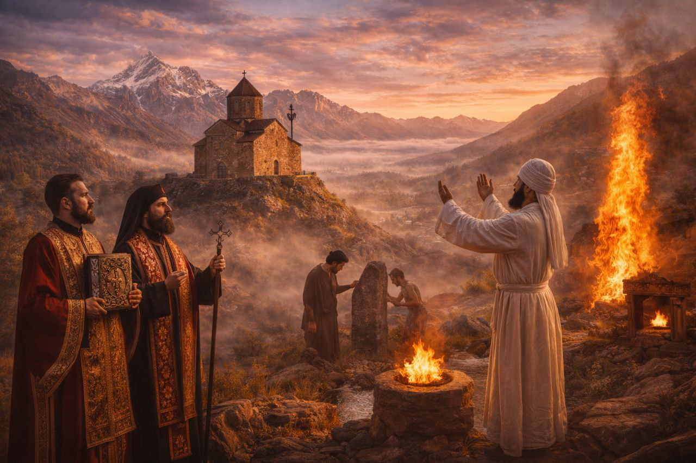
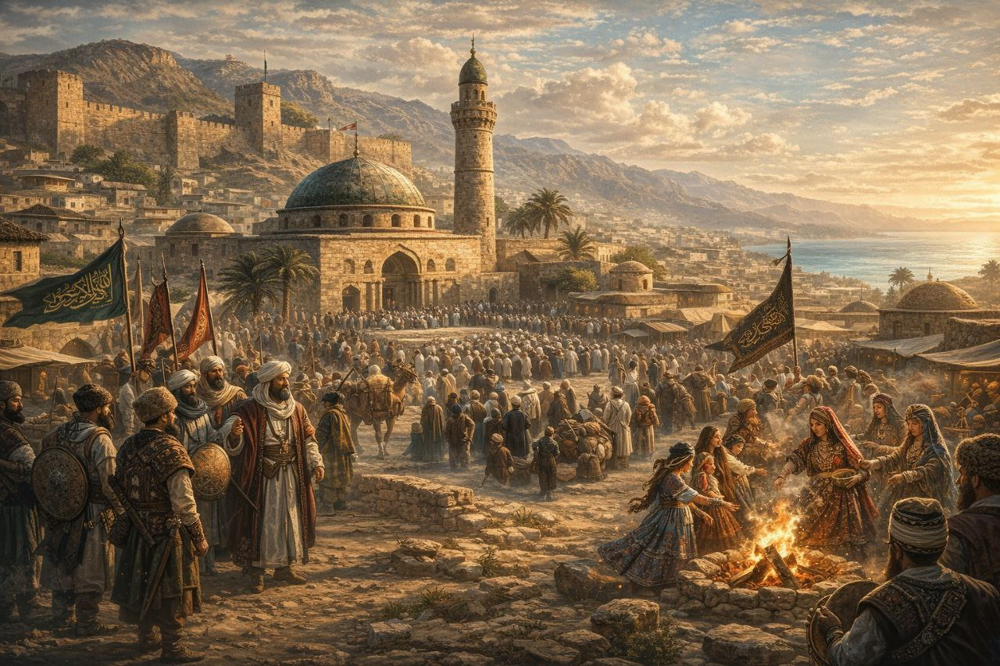
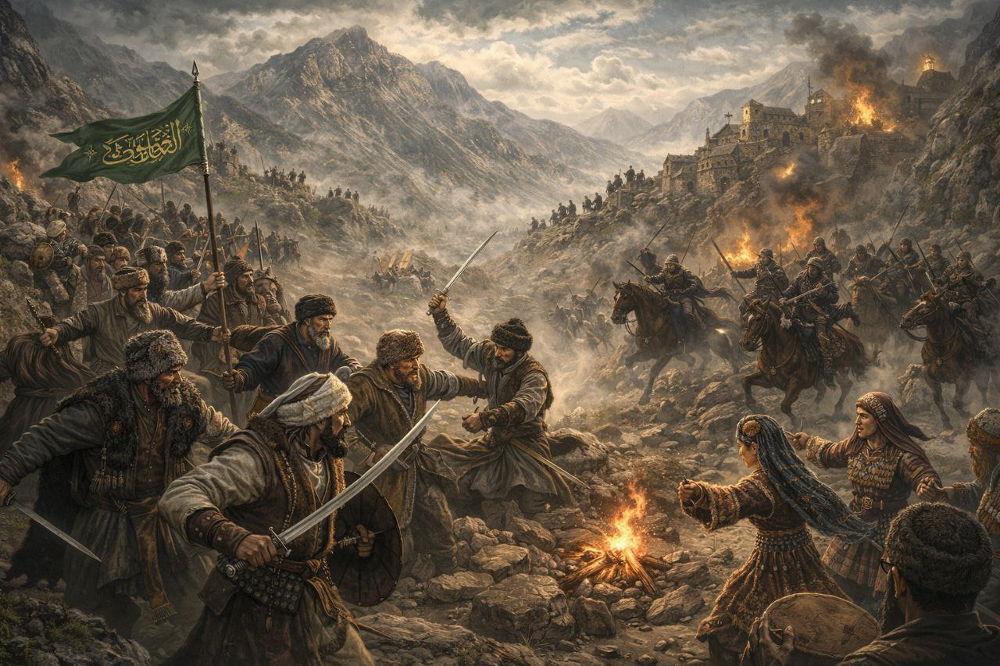
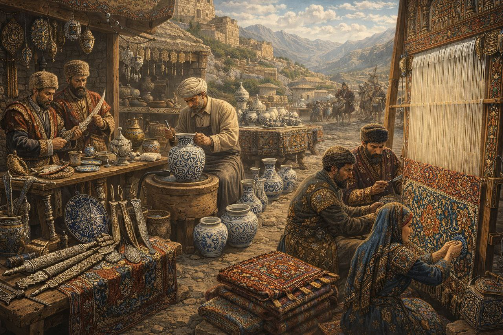
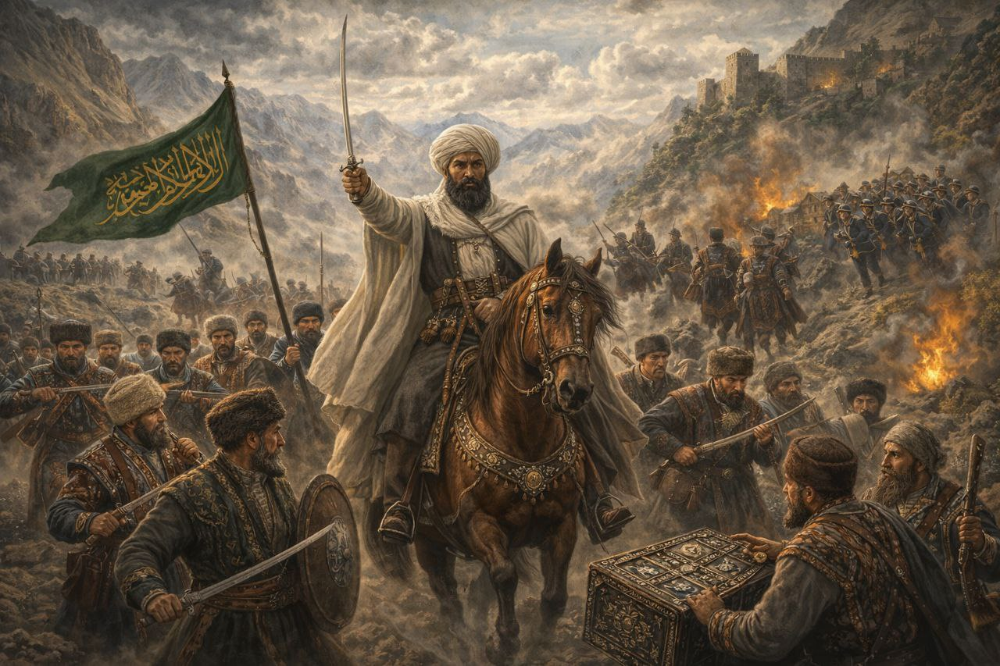
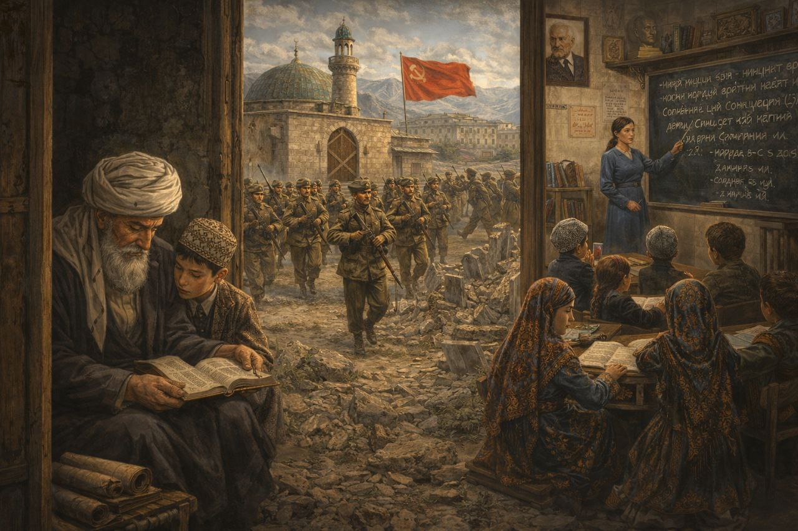
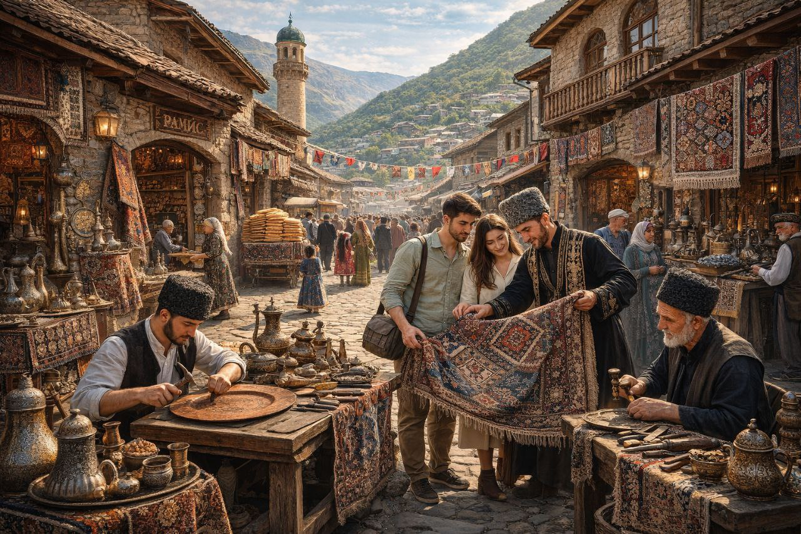

Путешествие сквозь века — от древних верований до современного возрождения культуры
От языческих обрядов до исламских традиций — 2000 лет истории в одной ленте
До прихода ислама в Дагестане сосуществовали различные религии. В горах сохранились следы христианских храмов, построенных грузинами и армянами. Огнепоклонничество (зороастризм) было распространено в прикаспийских районах, где находились древние святилища огня. Многие языческие обряды — поклонение деревьям, камням, источникам — трансформировались и вошли в народную культуру, сохранившись до наших дней.


Арабские завоевания принесли в Дагестан ислам. Дербент стал одним из первых мусульманских городов на территории современной России — здесь в 733 году была построена Джума-мечеть, древнейшая в стране. Ислам глубоко укоренился в культуре, но не вытеснил полностью древние обычаи. Так родился уникальный культурный синкретизм: мусульманские праздники переплелись с языческими обрядами, создав неповторимую дагестанскую идентичность.
Нашествие монголов заставило горцев объединиться. Дагестанцы успешно отразили несколько попыток завоевания, укрывшись в неприступных горах. Этот период укрепил традиции взаимопомощи между народами и сформировал легенды о неприступности Дагестана. Именно тогда окончательно сложилась система вольных обществ (джамаатов), управлявших горными районами без централизованной власти.


Золотой век дагестанских мастеров. Кубачинские ювелиры создавали оружие и украшения с филигранной отделкой, известные от Персии до Турции. Балхарские гончары делали керамику с уникальной белой глазурью. Унцукульские резчики по дереву инкрустировали изделия серебром и перламутром. Табасаранки ткали ковры со 140 узлами на квадратный дециметр — самые сложные в мире. Их изделия украшали дворцы восточных правителей и европейских аристократов.
Эпоха героического сопротивления Российской империи (1817-1864) под предводительством имама Шамиля. 47 лет горцы отстаивали свободу в неравной борьбе. Это время укрепило единство народов Дагестана и окончательно сформировало современное понимание адата (кодекса чести) и намуса (достоинства). Шамиль создал теократическое государство — Имамат, где шариат сочетался с традиционными горскими законами. После капитуляции началась интеграция Дагестана в российское пространство.


Время глубоких социальных перемен. Несмотря на атеистическую политику и борьбу с религией, народы Дагестана сохранили свои традиции, передавая их в семьях тайно. Советская власть дала региону всеобщую грамотность, письменность для десятков языков, высшее образование. Появилась дагестанская литература — Расул Гамзатов стал народным поэтом СССР. Но цена была высока: закрылись мечети, разрушены старинные кладбища, репрессированы алимы (учёные-богословы).
Эпоха культурного ренессанса. После распада СССР началось активное возрождение традиций: восстановлены мечети, открыты музеи ремёсел, проводятся фестивали национальных культур. Молодёжь изучает родные языки в специальных школах. Древние ремёсла обретают новое звучание — кубачинские мастера работают с современными дизайнерами, табасаранские ковры экспортируются по всему миру. Дагестан становится туристическим центром, где традиции живут не в музеях, а в повседневной жизни людей.

Священный долг каждого дома. Гость в Дагестане — посланник Аллаха, которому отдают лучшее и защищают ценой жизни. Даже враг, переступивший порог, становится неприкосновенным.
Многоэтапные торжества, длящиеся несколько дней. Включают сватовство, смотрины, калым (выкуп), обряд хны, само свадебное застолье с сотнями гостей и музыкой до рассвета.
Кодекс чести горца. Адат — свод обычных законов, регулирующих жизнь общины. Намус — понятие достоинства и чести, которое ценится выше жизни и богатства.
Важнейшее событие в семье. Обряды включают имянаречение на седьмой день, первую стрижку волос, раздачу милостыни бедным. Особо почитается рождение сына.
Древний земледельческий праздник, отмечаемый весной. Старейшина села первым проводит плугом по земле, символизируя начало сельскохозяйственного года.
Сельская община, принимающая коллективные решения на сходах. Древняя форма прямой демократии, сохранившаяся в горных районах до наших дней.
Древний обычай, почти исчезнувший. Убийство родственника требовало мести. Конфликты решались через примирение сторон с участием уважаемых старейшин.
Паломничество к святым местам — могилам праведников, горным святилищам, священным источникам. Люди приходят с просьбами о здоровье, детях, благополучии.
Языческий пережиток. Священные рощи, деревья, источники остаются местами поклонения. К ним привязывают ленточки с желаниями, оставляют монеты.
«В Дагестане каждый камень помнит предков, каждый родник хранит их голоса, а каждая гора — свидетель тысячи историй о чести, любви и свободе»
Гость священен. Ему отдают лучшую комнату, лучшую еду, даже если хозяин останется голодным. Обидеть гостя — преступление против всего рода. Защита гостя — долг каждого горца.
Данное слово нерушимо. Клятва, произнесённая на Коране или могиле предков, священна. Нарушить её — значит покрыть позором весь род на семь поколений.
Старейшины — хранители мудрости. Их слово — закон. Молодой не садится раньше старшего, не перебивает его, не проходит впереди. Седины — венец чести.
Честь сестры, матери, жены — святыня рода. Оскорбление женщины каралось строже, чем убийство мужчины. Женщина в горах — хранительница очага и традиций.
«Белх» — традиция коллективной помощи. Строят ли дом, собирают ли урожай, хоронят ли родственника — село приходит всем миром. Отказать в помощи — позор.
Кровная месть могла длиться поколениями. Но адат знал способ остановить её: публичное примирение, при котором враги становились побратимами и клялись на Коране.
Праздник жертвоприношения. В память о готовности пророка Ибрахима принести в жертву сына, мусульмане режут барана и раздают мясо бедным.
Праздник разговения после месяца Рамадан. Люди надевают лучшую одежду, идут в мечеть, накрывают столы и навещают родственников.
Древний праздник весеннего равноденствия. Готовят ритуальные блюда из семи ингредиентов, зажигают костры, прыгают через огонь для очищения.
Старейшина села проводит первую борозду серебряным плугом. Затем — общее застолье, на котором благодарят землю за урожай прошлого года.
Когда созревают первые ягоды, их собирают и раздают соседям. Никто не имеет права есть черешню раньше, чем её попробуют старики.
В засуху женщины делали куклу «Земире», наряжали её и носили по аулу с песнями-молитвами о дожде. Обливали куклу водой у каждого дома.